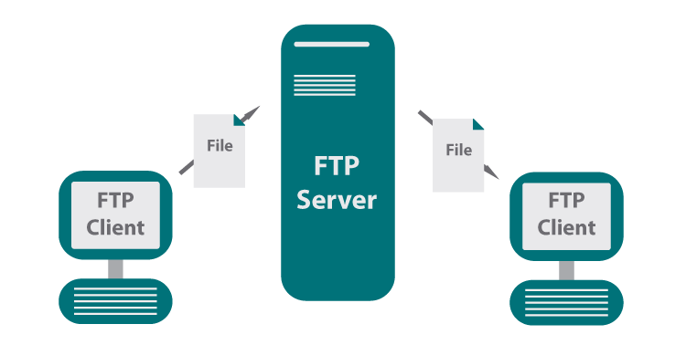

|

|
El correo electrónico sirve para enviar y recibir mensajes escritos entre usuarios de una red informática.
Es uno de los servicios más antiguos y extendidos de Internet. Una de sus ventajas es que se pueden añadir archivos de todo tipo a los mensajes: documentos escritos con un procesador de textos, imágenes, etc.
Prácticamente todos los usuarios de Internet emplean el correo electrónico. Permite comunicarse con otras personas que habitan en regiones diferentes del planeta con un coste reducido.
|
|

|
En el correo electrónico no hace falta que los dos interlocutores estén conectados al mismo tiempo para recibir los mensajes. Sin embargo, existen en Internet otros servicios que sí permiten la comunicación simultánea.
El más conocido de ellos es el Chat. El Chat, cuyo significado en español es “charla”, es un servicio en el que dos o más personas pueden establecer conversaciones a través de ventanas de texto en las que van apareciendo consecutivamente las intervenciones que cada interlocutor escribe con su teclado.
|
|

|
El servicio Telnet permite controlar un ordenador desde un lugar distante, sin sentarnos delante de él. Esto facilita, por ejemplo, el acceso al ordenador de un empleado desde la sede de la empresa en otra ciudad. En el ámbito científico este servicio permite acceder a base de datos o incluso instrumentos que se encuentran alejados del investigador.
|
|
|
Los foros de discusión.
Los foros de discusión son un servicio de Internet en el que muchos usuarios acceden a los mensajes escritos por un visitante de dicho foro.
|
|

|
La transferencia de archivos (FTP)
El servicio FTP (File Transfer Protocol) permite transferir archivos entre equipos informáticos.
Es uno de los servicios más antiguos de Internet. En algunos casos, los archivos almacenados se protegen con una contraseña, de manera que sólo los usuarios autorizados pueden manipularlos.
|
|

|
Videoconferencia
El servicio de videoconferencia permite mantener comunicación sonora y visual entre dos usuarios de Internet.
|
|

|
Compras en línea
El comercio electrónico, también conocido como e-commerce (electronic commerce en inglés) o bien comercio por Internet o comercio en línea, consiste en la compra y venta de productos o de servicios a través de medios electrónicos, tales como redes sociales y otras páginas web.
La cantidad de comercio llevada a cabo electrónicamente, ha crecido de manera extraordinaria debido a Internet. Una gran variedad de comercio se realiza de esta manera, estimulando la creación y utilización de innovaciones como la transferencia de fondos electrónica, la administración de cadenas de suministro, el marketing en Internet, el procesamiento de transacciones en línea (OLTP), el intercambio electrónico de datos (EDI), los sistemas de administración del inventario y los sistemas automatizados de recolección de datos.
La mayor parte del comercio electrónico consiste en la compra y venta de productos o servicios entre personas y empresas, sin embargo un porcentaje considerable del comercio electrónico consiste en la adquisición de artículos virtuales (software y derivados en su mayoría), tales como el acceso a contenido "premium" de un sitio web. En este sentido, hay multitud de plataformas en la nube donde te puedes crear tu propio comercio electrónico.
Ventajas:
1. Para las empresas
Mejoras en la distribución: La Web ofrece a ciertos tipos de proveedores (industria del libro, servicios de información, productos digitales) la posibilidad de participar en un mercado interactivo, en el que los costos de distribución o ventas tienden a cero, como por ejemplo en la industria del software, en la que los productos pueden entregarse de inmediato, reduciendo de manera progresiva la necesidad de intermediarios.
Comunicaciones comerciales por vía electrónica: Actualmente, la mayoría de las empresas utiliza la Web para informar a los clientes sobre la compañía, aparte de sus productos o servicios, tanto mediante comunicaciones internas como con otras empresas y clientes; esto facilita las relaciones comerciales, así como el soporte al cliente, ya que al estar disponible las 24 horas del día, las empresas pueden fidelizar a sus clientes mediante un diálogo asincrónico que sucede a la conveniencia de ambas partes.
Beneficios operacionales: El uso empresarial de la Web reduce errores, tiempo y sobre costos en el tratamiento de la información. Los proveedores disminuyen sus costos al acceder de manera interactiva a las bases de datos de oportunidades de ofertas, enviar éstas por el mismo medio, y por último, revisar de igual forma las concesiones; además, se facilita la creación de mercados y segmentos nuevos, el incremento en la generación de ventajas en las ventas, la mayor facilidad para entrar en mercados nuevos, especialmente en los geográficamente remotos, y alcanzarlos con mayor rapidez.
Facilidad para fidelizar clientes: Mediante la aplicación de protocolos y estrategias de comunicación efectivas que le permitan al usuario final del portal web de la compañía plantear inquietudes, levantar requerimientos o simplemente hacer comentarios con relación a los productos o servicios de la misma, y si y solo si estos comentarios son debidamente procesados se puede crear un elemento importante para lograr la fidelización de los clientes, y en consecuencia aumentar la re-compra de productos y servicios, así como también la ampliación del rango de cobertura en el mercado.
2. Para los usuarios: La utilización de las compras electrónicas por internet le otorgan a los usuarios ciertas ventajas:
Encontrar un producto a menor costo. Tiene más oportunidades de navegar y encontrar un producto que más se adapte a su economía.
Realizar mejor negociación con el vendedor: Existen tiendas virtuales que permiten el regateo con el vendedor, dándoles más beneficios económicos al comprador por lograr obtener a menor costo el producto deseado, o en su defecto el vendedor le ofrece regalías al comprador.
Genera comodidad en la adquisición del bien o producto. El comprador desde la comodidad de su hogar o trabajo puede comprar y adquirir el producto deseado, sin necesidad de trasladarse a otro sitio.
|